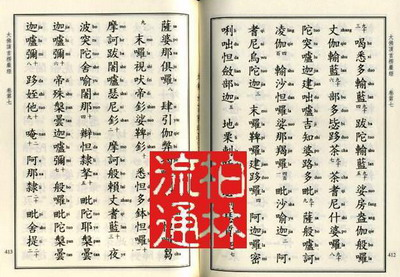
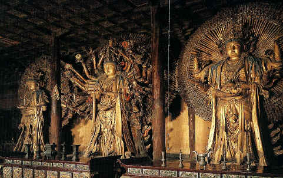
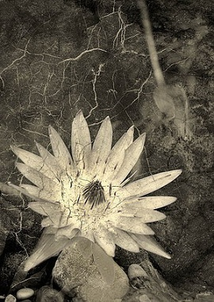
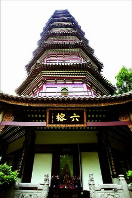

楞严咒的神奇功效
冯冯
君之剑../ .誊录
楞严咒被称为佛经咒中之王，虔诚称念，功效感应殊胜。昔日我在金山寺获得宣化法师教诲，他亲授我楞严咒，后来他又寄赠家母楞严咒经本。我根器太差，此犹小事，最遭的是没有恒心耐性，念经是‘一曝十寒’，一阵子整天念，过些时却又好几天忘了念，又贪玩又爱看电视。所以始终没能把楞严咒全部念熟，真是既笨又懒。
念经念佛懒惰不勤，摄服不了乱心，于是贪欲、嗔念、愚痴、疑神疑鬼、困惑......十大烦恼都一一来临了。我天天都得‘重头再炼’，法师讲的真是一点也不错，我真是惭愧的很。楞严咒也的确是太难念，我念了几年也记不全，而且还得常常看着本子念，搁下几天，又忘了一些了！大悲咒可容易念，记得全，金刚经也记得全，楞严咒，我真的是没法子，自己太笨！
咒中的梵文原音，好像都差不多，很容易使记忆混淆，大概都是普天诸佛的名号，所以诚心一念楞严咒，群魔恭敬退避，法华经说诸天有两百亿佛，弥陀经说有十万亿佛，其实宇宙中佛陀何止此数？
宇宙中无处无佛，历经无量无限僧祇劫以来，有无量佛，佛号在咒中保持梵音，可能在念时产生若干特殊音波功效，摄服群魔，现代科学，运用音波，可以治病，又可以做很多机械工作及引起物质的物理变化，佛家念楞严咒的万佛佛号，产生微细超音波，自然可以请来佛力降魔。
我数年前居住的一座七十年旧宅，时常有一个四五岁大的西洋小女孩鬼影出现，他不时进入我的卧室，好奇张望。宅前马路对面有一棵大树，每年必有人开车撞上，车毁人亡，八九年来，年年如是，最后一次撞车，还是双尸，一男一女，我半夜闻声出视，亲见两尸的灵魂从尸体爬出，彷徨无措。女鬼想进入我家，被我叱止，他以后就寄身大树内，起先啼哭，后来日久，招来一批年轻野鬼，时常窥伺过路车辆，要找替身。
宣化法师教我念楞严咒之后，我和家母合力恭念，念了几夜，我看到不知何处涌来千千万万的白色莲花，把大树的女鬼载走，越去越远，女鬼不情愿，却身不由己，以后清静了一阵子，那一年没有再发生车祸死人（这件事曾经报导过）。
我们搬家出来以后，那大树又附了好些鬼魂，那女鬼又回来了，那处地方又再出车祸一次两次，总有人横死，现在我都不敢再去那里了。（注）
现在的住宅，我初搬来时，白天也见到一个瘦小西洋老年男子，不停吐口沫；晚上见到一个肥胖西洋老妇，笑容满面，到我房中，笑容满面，到我房中，亲热称我为‘儿子’。我知他们是异物，但我不畏，我就念佛，念楞严咒，他们并无恶意，说是来看看故居，又说是很喜欢我照顾房子，以后他们就不再出现了。
我记下他们的面貌特征和衣着打扮形状，访问邻近的老人，我一提，他们就告诉我那是房从前的主人主妇，都是医生，已经死了十多年了。
现在我们供奉了佛像，再没什么鬼物出现了。
家母念经比我勤恳，他天天都念，他慢慢一段一段学念，居然把楞严咒念熟了，可以背得下来了，我还不行。
舍下后园有一株五十年梨树，每年春天二三月，开满一树花，像一座宝塔，梨花洁白玲珑，有几分梅花的样子，梨花每年只开一次，到了夏天结果实，冬天成熟。
去年，奇怪的事发生了，老梨树突然在秋天第二次开花！那时已经梨实累累，竟然会有一株突然长出花蕾，又开出花朵来了！
梨开二度！这可不是新闻。家母和我密切注意他，后来他居然也结小梨，我们采下供养，没敢吃它。
虚云老和尚当年在广州六榕寺说佛法，夏秋之间，桃花突然盛开，轰动一时。
我们毫无道行，怎可企比虚老？不过家母念佛至诚，日夜不懈，梨花开二度，正在他窗外，不知是否他勤于念佛所获的佛力现瑞？
除了这一推测外，我委实找不到较为合理的解释，也就姑且如此附会吧！
网注：此处为温哥华东区的Slocan Street (夹 29 Ave)，亦是冯冯首次购屋居住之所。数年后，迁至温哥华西区10 Ave (夹 Highbury Street)的永忏楼。
原载万佛城《金刚菩提海》第135期：1981年08月1日